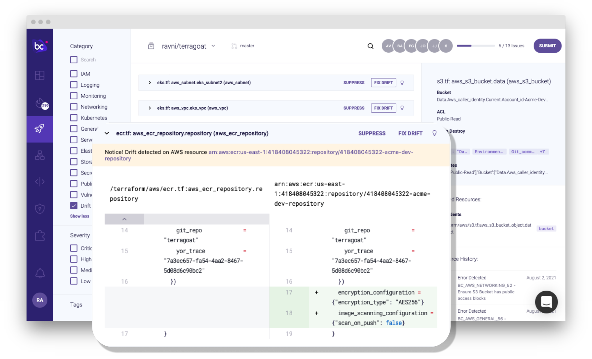
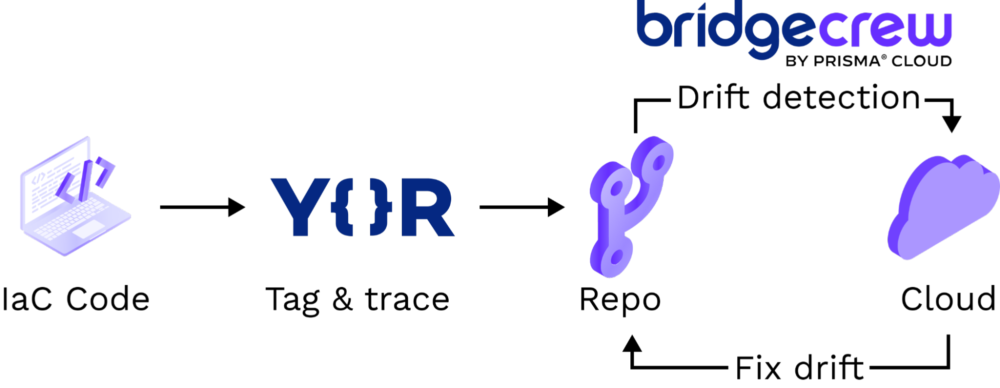
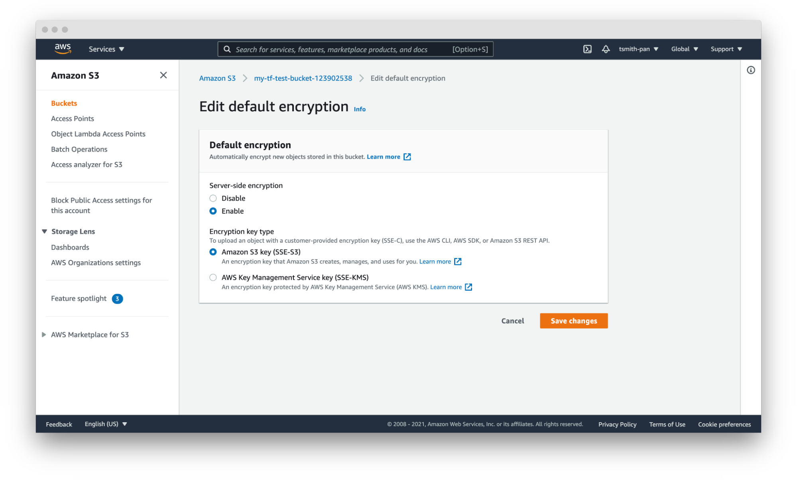
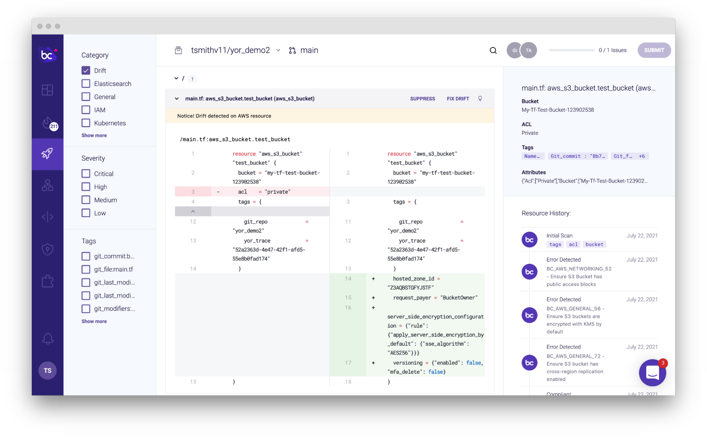
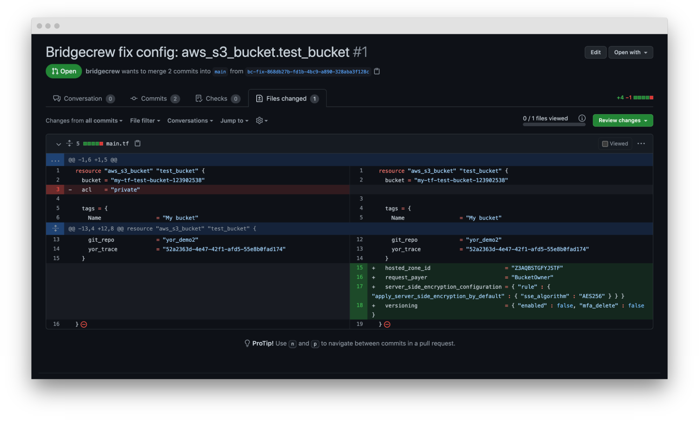

Infrastructure as code (IaC) templates simplify the provisioning of cloud infrastructure. In combination with a version control system (VCS), IaC enables key operational and security capabilities of GitOps, such as versioning, collaboration, auditing, repeatability, and templatizing.
However, those benefits are lost if updates and modifications are made in the cloud directly when fixing misconfigurations, during “break glass” moments when an incident occurs, or due to permissions issues where Ops teams don’t have access to the code, or when a cloud provider changes the API for services you use.
This mismatch between cloud resource configurations and the IaC framework that provisioned them is called cloud “drift.”
Why drift occurs and its implications
Drift can happen in many scenarios and for various reasons. For example, Operations teams may be trying to fix a customer-impacting issue and, in a panic, drop security standards like requiring HTTPS. When the incident passes, they may forget to go back and fix it, leaving traffic open to man-in-the-middle attacks.
However, drift is often introduced with good intentions. An SRE notices an S3 bucket is unencrypted, doesn’t have permission to edit the code, and doesn’t know the code owner. So, they encrypt the bucket from the cloud console but not in the IaC template that provisioned the bucket. This action introduces drift.
While drift may not be explicitly a bad thing, it creates blind spots that can have negative consequences. It may seem easy to make those repairs directly in the cloud console or to ignore cloud API changes, but there is far more value in keeping configurations up to date and vetted using IaC templates that pass through CI/CD pipelines. Keeping cloud configurations synchronized with IaC templates ensures you are able to capture the benefits that you were trying to get from using IaC templates in the first place.
That’s why we are excited to announce our latest release of Multi-Cloud Drift Detection with Drift Fix! 🔄
What is Multi-Cloud Drift Detection?
You can now use the Bridgecrew by Prisma Cloud platform to compare Terraform code against running cloud resource configurations across AWS, Azure, and GCP.
As long as you’ve onboarded a repository containing the code that provisioned cloud resources, as well as the corresponding cloud account, Bridgecrew will periodically scan the cloud environments and surface drifts between the two.

If the change made should be permanent, you can easily add the drifted configuration into the code resource block in your VCS by selecting Fix Drift. If the drift is a temporary change that needs to be reverted, running terraform apply will bring the resources back inline.
All this is made possible using our newly introduced open-source tool, Yor, on the backend. Yor automatically tags every IaC resource in code with several valuable infrastructure tags, including yor_trace. Once deployed, the running cloud resources also have that tag, so you can quickly trace the running cloud resource state to the Terraform code stored in your VCS for comparison.

In the Bridgecrew platform, we provide alerting for the alteration and additional context including the resource code owner, dependencies, configuration history, and the diff between the environments in HCL. Providing the diff in HCL makes it easy for developers to quickly compare what has changed. Instead of digging through different configuration menus or combing through JSON or YAML outputs, you can compare apples to apples.
So, how do you get started with Drift Detection?
Six steps to implement Drift Detection
Step 1: Run Yor as a pre-commit hook, CI step, or locally
Start by adding the automatic tags from Yor. We recommend you automate this step as a pre-commit hook or CI step, but you can run it locally. To run Yor as a GitHub Action, add the following code to one of your GitHub Action YAMLs:
- name: Checkout repo uses: actions/checkout@v2 with: fetch-depth: 0 - name: Run yor action uses: bridgecrewio/yor-action@main
Or as a stage in GitLab CI:
.git-script: &git-script |
cd $CI_PROJECT_DIR
git status
lines=$(git status -s | wc -l)
if [ $lines -gt 0 ];then
echo "committing"
git config --global user.name "$AUTO_COMMITTER_NAME"
git config --global user.email "$AUTO_COMMITTER_EMAIL"
echo ".yor_plugins" >> .gitignore
git add .
git commit -m "YOR: Auto add/update yor.io tags."
git push -o ci.skip "https://${GITLAB_USER_NAME}:${GIT_PUSH_TOKEN}@${CI_REPOSITORY_URL#*@}"
else
echo "no updated resources, nothing to commit."
fi
stages:
- yor
run-yor:
stage: yor
script:
- git checkout ${CI_COMMIT_REF_NAME}
- export YOR_VERSION=0.1.62
- wget -q -O - https://github.com/bridgecrewio/yor/releases/download/${YOR_VERSION}/yor-${YOR_VERSION}-linux-amd64.tar.gz | tar -xvz -C /tmp
- /tmp/yor tag -d .
- *git-script
Running this will automatically tag each resource in Terraform with a unique `yor_trace` tag that will look something like this:
yor_trace = "7a3ec657-fa54-4aa2-8467-xxxxxxxxxxxx"
Step 2: Connect your cloud accounts and repositories
Next, if you haven’t already, onboard your AWS, Azure, or GCP accounts. This will deploy a stack that allows us to read the state of your cloud resources.
Then onboard your repositories. Today, we support GitHub, GitHub Enterprise, GitLab, GitLab Self-Managed, Bitbucket, Bitbucket Server, and Azure Repos. Again, don’t worry if you’ve already onboarded your account. The great thing about Drift Detection with Yor is that we’ll be able to compare any commits with the trace tag.
That’s it. You’re now all set up to detect drift. The next steps are purely illustrative of how Bridgecrew detects drift.
Step 3: Commit and deploy IaC code
Now that you have Yor set up and your cloud accounts and repositories onboarded, run code through your pipeline to be tagged. Here’s a sample Terraform resource block that will provision a simple S3 bucket:
resource "aws_s3_bucket" "data" {
bucket = "company-data-bucket"
acl = "private"
force_destroy = true
tags = {
Name = "company-data-bucket"
}
}
Committing that code through the pipeline will add all of the Yor tags:
resource "aws_s3_bucket" "data" {
bucket = "company-data-bucket"
acl = "private"
force_destroy = true
tags = merge({
Name = "company-data-bucket"
}, {
git_commit = "d68d2897add9bc2203a5ed0632a5cdd8xxxxxxxxx"
git_file = "terraform/aws/s3.tf"
git_last_modified_at = "2021-08-02 14:46:24"
git_last_modified_by = "guy"
git_modifiers = "guy"
git_org = "bridgecrewio"
git_repo = "drift_detection"
yor_trace = "7a3ec657-fa54-4aa2-8467-xxxxxxxxxxxx"
})
}
Finally, deploy the bucket using your CD pipeline or terraform apply.
Step 4: Create drift
This is the part where you can get creative. Cause a little mischief or do a little good. For my example, I’m going to turn on default encryption—a good security practice, but best done in code to follow GitOps.
In the AWS Console, under S3 Buckets, find your bucket and make a change. I’ve gone ahead and set the default encryption to Enable and Amazon S3 key (SSE-S3).

Step 5: Investigate the drift
Typically, Bridgecrew only checks periodically for drift to avoid unnecessary API calls to your cloud environment. For the purpose of this demonstration, we’ll synthetically kick off a scan using the Bridgecrew API with the following command, replacing $YOUR_BC_API_KEY with your own API key found on the Integrations page:
curl --request POST --url https://www.bridgecrew.cloud/api/v1/scans/integrations --header 'authorization: $YOUR_BC_API_KEY'
On the Projects page, use the filter controls on the left to filter down to Drift. This will identify all of the differences found by Drift Detection powered by Yor, as well as drifts detected with a Terraform Cloud integration set up.

Step 6: Remediate!
If you want to fix drift you can either run terraform apply to bring cloud configurations inline with your code, or you can update your code to match the cloud state.
Ordinarily, the second option was a bit more difficult. You would have had to look up how to match the changes using code or somehow convert your cloud provider’s JSON or YAML config dump into HCL. With Bridgecrew, the code on the right (cloud environment) will be added to the code on the left (IaC code in your repo). Simply click Fix Drift and Bridgecrew creates a new pull/merge request that adds the drifting cloud configurations to the Terraform resource block, thus aligning code and cloud.

After fixing the issue, that drift will be gone from the Projects page and your code and cloud will be in sync!
Final thoughts
GitOps doesn’t need to be hard to realize all of its benefits. Keeping all configurations in code is a great practice to help with team collaboration and improve operations and security. Bridgecrew’s new Drift Detection feature is a powerful tool to keep up these good practices and alert teams when runtime environments shift away from the IaC templates that configured them.
Sign up for our free 14-day trial to try this and other features out for yourself!